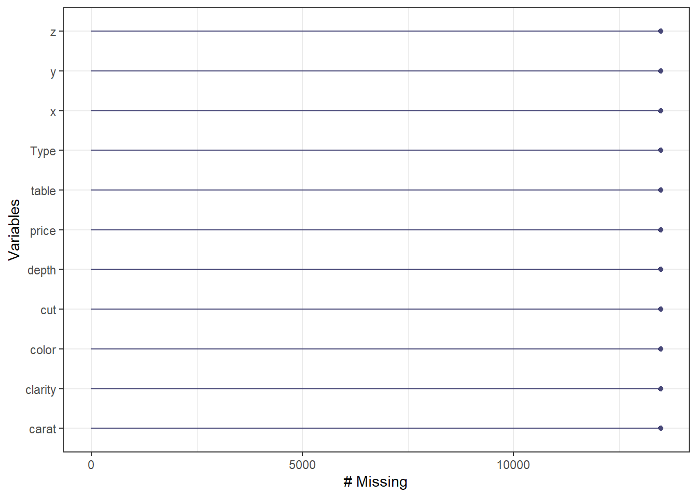
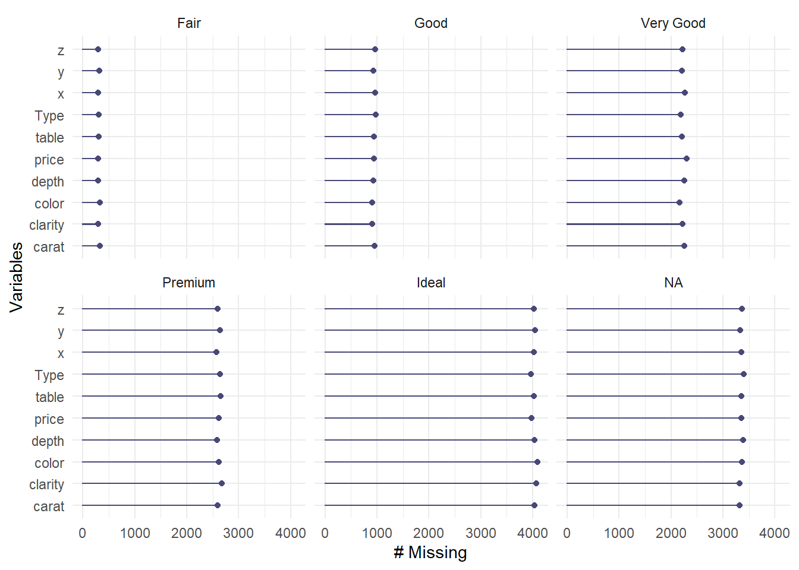
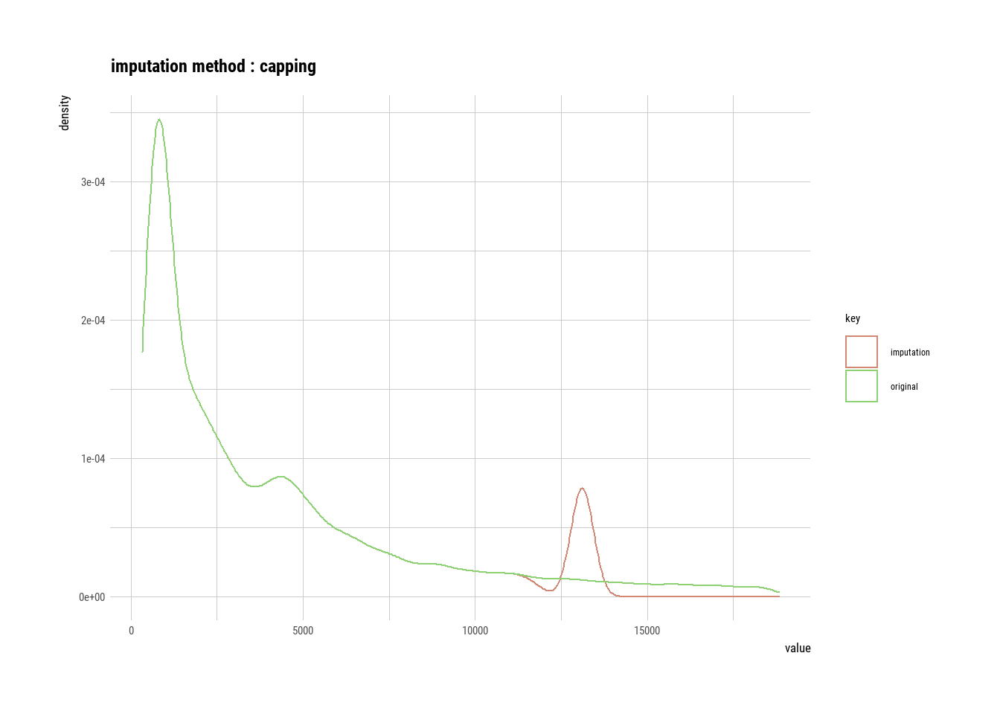
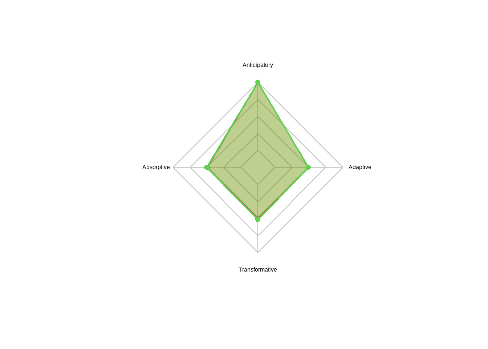

Chapter 4 Descriptive - Primelinary Analysis (Exploratory Data Analysis - EDA)
4.1 Motivation
- To make sure data cleaning step is automatized and consistent.
- To make sure data contains relevant variables before analysis.
- To make sure there are no unexpected variable type issues.
- Detect any missing values, especially in numeric columns to understand if it should be NA or 0.
- Control and compare different users` values for specific variables.
- Calculate must-have indicators such as LCSI and RCSI.
- Make data TIDY… Such as: multiple selection questions are in dummy variables and binary now.
- Setting the scene for having reproducible studies.
4.2 Data Cleaning
4.2.1 Column Renaming
If there is an error on this part, check error details. Following issues might be in-place;
- Duplication on column names
- Removal of some columns from the original data
Basically, if the following code and imported data sets column names does not match, this error is inevitable.
For solution steps:
- Check error message, find out which columns have error.
- Correct the column names using chunk of coding below by accurate names.
#Code example; I am using rename function but there might be better ones for sure.
#Lets keep using diamonds data for this as well.
#rename comes with dplyr.
library(dplyr)
library(tidyverse)
DiamondsRenamed <- diamonds %>% rename("renamed_table"="table")
colnames(diamonds)## [1] "carat" "cut" "color" "clarity" "depth" "table" "price" "x" "y" "z" "veg" "Type"colnames(DiamondsRenamed)## [1] "carat" "cut" "color" "clarity" "depth" "renamed_table" "price" "x" "y" "z"
## [11] "veg" "Type"4.2.2 Converting Multiple Selections into Dummy Variables
This issue happens with ODK or Device Magic, as they put multiple selections question into one variable. KOBO does this dummy coding it self, which is amazing. Converting these columns might consume a bit of time, let me introduce you how I manage this bothering situation… If you have a better way to do it, let me know!
#Lets add a column to diamonds to work with
#We added multiple selections divided by comma
DiamondsRenamed$MultSelec <- "Selection1,Selection2,Selection5"#Take this column as data frame from our main data frame
df_multselec <- as.data.frame(DiamondsRenamed$MultSelec)
#Rename this data frame column
colnames(df_multselec)<- "examplecolumn"
#We will use cSplit_e function within splitstackshape package
library(splitstackshape)
#Now you have these columns as dummy ones, if it is selected it goes as 1 otherwise as 0.
#Each category becomes a column with binary format.
df_multselec_seperated <- cSplit_e(df_multselec, split.col = "examplecolumn",
sep = ",", type = "character", mode = "binary", fixed = TRUE, fill = 0)
#Remove original column before merging with original data, so that you will not have duplicate columns.
df_multselec_seperated$examplecolumn <- NULL
#With column bind, add new dummy columns into original data. Done.
DiamondsRenamed <- cbind(DiamondsRenamed,df_multselec_seperated)
#Lets see what happened. Check last three columns as example column.
library(dplyr)
glimpse(DiamondsRenamed)## Rows: 53,940
## Columns: 16
## $ carat <dbl> 0.23, 0.21, 0.23, 0.29, 0.31, 0.24, 0.24, 0.26, 0.22, 0.23, 0.30, 0.23, 0.22, 0.31, 0.20, 0.32, 0.30, 0.30, 0.30, 0.30, 0.30, 0.2…
## $ cut <ord> Ideal, Premium, Good, Premium, Good, Very Good, Very Good, Very Good, Fair, Very Good, Good, Ideal, Premium, Ideal, Premium, Prem…
## $ color <ord> E, E, E, I, J, J, I, H, E, H, J, J, F, J, E, E, I, J, J, J, I, E, H, J, J, G, I, J, D, F, F, F, E, E, D, F, E, H, D, I, I, J, D, …
## $ clarity <ord> SI2, SI1, VS1, VS2, SI2, VVS2, VVS1, SI1, VS2, VS1, SI1, VS1, SI1, SI2, SI2, I1, SI2, SI1, SI1, SI1, SI2, VS2, VS1, SI1, SI1, VVS…
## $ depth <dbl> 61.5, 59.8, 56.9, 62.4, 63.3, 62.8, 62.3, 61.9, 65.1, 59.4, 64.0, 62.8, 60.4, 62.2, 60.2, 60.9, 62.0, 63.4, 63.8, 62.7, 63.3, 63.…
## $ renamed_table <dbl> 55, 61, 65, 58, 58, 57, 57, 55, 61, 61, 55, 56, 61, 54, 62, 58, 54, 54, 56, 59, 56, 55, 57, 62, 62, 58, 57, 57, 61, 57, 57, 57, 5…
## $ price <int> 326, 326, 327, 334, 335, 336, 336, 337, 337, 338, 339, 340, 342, 344, 345, 345, 348, 351, 351, 351, 351, 352, 353, 353, 353, 354,…
## $ x <dbl> 3.95, 3.89, 4.05, 4.20, 4.34, 3.94, 3.95, 4.07, 3.87, 4.00, 4.25, 3.93, 3.88, 4.35, 3.79, 4.38, 4.31, 4.23, 4.23, 4.21, 4.26, 3.8…
## $ y <dbl> 3.98, 3.84, 4.07, 4.23, 4.35, 3.96, 3.98, 4.11, 3.78, 4.05, 4.28, 3.90, 3.84, 4.37, 3.75, 4.42, 4.34, 4.29, 4.26, 4.27, 4.30, 3.9…
## $ z <dbl> 2.43, 2.31, 2.31, 2.63, 2.75, 2.48, 2.47, 2.53, 2.49, 2.39, 2.73, 2.46, 2.33, 2.71, 2.27, 2.68, 2.68, 2.70, 2.71, 2.66, 2.71, 2.4…
## $ veg <chr> "Orginal", "Orginal", "Orginal", "Orginal", "Orginal", "Orginal", "Orginal", "Orginal", "Orginal", "Orginal", "Orginal", "Orginal…
## $ Type <chr> "Population", "Population", "Population", "Population", "Population", "Population", "Population", "Population", "Population", "Po…
## $ MultSelec <chr> "Selection1,Selection2,Selection5", "Selection1,Selection2,Selection5", "Selection1,Selection2,Selection5", "Selection1,Selection…
## $ examplecolumn_Selection1 <dbl> 1, 1, 1, 1, 1, 1, 1, 1, 1, 1, 1, 1, 1, 1, 1, 1, 1, 1, 1, 1, 1, 1, 1, 1, 1, 1, 1, 1, 1, 1, 1, 1, 1, 1, 1, 1, 1, 1, 1, 1, 1, 1, 1, …
## $ examplecolumn_Selection2 <dbl> 1, 1, 1, 1, 1, 1, 1, 1, 1, 1, 1, 1, 1, 1, 1, 1, 1, 1, 1, 1, 1, 1, 1, 1, 1, 1, 1, 1, 1, 1, 1, 1, 1, 1, 1, 1, 1, 1, 1, 1, 1, 1, 1, …
## $ examplecolumn_Selection5 <dbl> 1, 1, 1, 1, 1, 1, 1, 1, 1, 1, 1, 1, 1, 1, 1, 1, 1, 1, 1, 1, 1, 1, 1, 1, 1, 1, 1, 1, 1, 1, 1, 1, 1, 1, 1, 1, 1, 1, 1, 1, 1, 1, 1, …4.2.3 Missing Values
4.2.3.1 Defining Missing Values of Dataframe
Usually we do not have missing values, if questionnaire design tailored well in Kobo or ODK. Conditional or mandatory questions can be defined during this phase. Still, checking missing data always a must. Data cleaning step should be held with consultation of whoever design KOBO-ODK forms. These persons can explain you tips and tricks of the data and could give you a parade of the data.
#Required packages are visdat and naniar.
library(visdat)
library(naniar)
#Lets see if diamonds data have some missing values here and there.
vis_dat(diamonds)
There are no missing values in diamonds data. One of the amazing thing of this visual is it gives you types and structures of the each variable. This thing sure is an art! Amazing! Lets remove some (put some NA values intentionally) values and see that amazing visual again.
#Required packages for adding random NAs to data is missMethods.
library(missMethods)
#With delete_MCAR function, we delete random values to 25% of the data and make them NA.
diamonds_missing <- delete_MCAR(diamonds, p = 0.25)
vis_dat(diamonds_missing)
So now, grey lines in the visual reflects NAs. Amazing! Lets check the percentage of missing now:
#Percentage of missing by variable.
vis_miss(diamonds_missing)
Amazing. delete_MCAR function is king. You can see %25 missing randomly from each column. To have a better knowledge about these operations please visit: https://cran.r-project.org/web/packages/naniar/vignettes/getting-started-w-naniar.html
Missing frequency.
gg_miss_var(diamonds_missing) + theme_bw() 
Missing frequency disaggregated by categorical variable.
gg_miss_var(diamonds_missing, facet = cut)
4.2.3.2 Imputation of Missing Values
There are several methods for imputation such as median-mean imputations or one can go all in and use some regressions even. Most of the cases, for some numeric values, you need to replace NAs with zeros in humanitarian data. So lets say, questionnaire designer linked two questions; do you have income?-Yes or no question ; if yes, how much? If the answer is NO, then how much question is not appearing in data, means that this value will be NA. On the other hand, for analysis purposes, you need to embed zero to those values. Happens a lot! Let me show you how I handle this in R (also adding few useful codes that I use during data cleaning);
#Lets do this operation for only numeric columns of diamnonds data.
#setnafill comes with data.table package. Mapping numeric columns map_lgl comes with purrr package.
library(purrr)
library(data.table)
diamonds_missing[ , purrr::map_lgl(diamonds_missing, is.numeric)]## # A tibble: 53,940 × 7
## carat depth table price x y z
## <dbl> <dbl> <dbl> <int> <dbl> <dbl> <dbl>
## 1 0.23 61.5 NA 326 3.95 NA 2.43
## 2 0.21 59.8 61 NA 3.89 3.84 2.31
## 3 0.23 56.9 65 327 NA 4.07 2.31
## 4 NA 62.4 58 334 4.2 4.23 2.63
## 5 NA 63.3 58 335 4.34 NA NA
## 6 0.24 62.8 NA 336 NA NA NA
## 7 NA 62.3 57 NA 3.95 NA NA
## 8 NA 61.9 55 337 4.07 NA 2.53
## 9 NA NA 61 337 3.87 3.78 2.49
## 10 0.23 59.4 61 338 4 4.05 2.39
## # … with 53,930 more rows#Fill NA values with zero only for numeric variables.
setnafill(diamonds_missing[ , purrr::map_lgl(diamonds_missing, is.numeric)], fill=0)
vis_miss(diamonds_missing)Now, we do not have any missing values for numeric columns as they are converted to (filled with) zeros. Job well done! setnafill is a great piece of function that you can use, please do check it further.
4.2.3.3 Imputation of Missing Values with Regression
This method is amazing where you can fill values by categories. Think of humanitarian data and you have some missing values in income.
# da1 <- impute_lm(dat, Sepal.Length ~ Sepal.Width + Species)
# da2 <- impute_median(da1, Sepal.Length ~ Species)Some useful coding lines;
#This piece of code shows you how to select columns starts with etc.
#Not related with this concept but I will add those here, very useful piece of code.
#CashUsageReplace <- colnames(x1 %>% dplyr::select(ends_with("_cash",ignore.case = TRUE)))
#EcmenReplace <- colnames(x1 %>% dplyr::select(starts_with("ecmen_",ignore.case = TRUE)))
#Also, if you want to delete variables, lets say which has missing values greater than %80 of their records, you can use a piece of code given below.
#x2 <- x1[colSums(is.na(x1))/nrow(x1) < .8]4.2.4 Outliers
Outliers are more bothering than missing values. Humanitarian data contains outliers but the trick is, you do not know if it is true or not. Lets say you are collecting expenditure data, disaggregated by components such as rent, health, education, celebrations etc. You may end up with a cases like 10000-25000, while mean is 100, median is 150. So these cases are clearly an outlier. Are they? When you contact your enumerators for these type of cases, you may realize some of them are key-entry error, yet some have stories behind. A man might find a debt from somewhere and gets really serious health surgery, or family does a wedding that boost their expenditure towards celebrations.
To deal with those cases, I have two copings;
- Use median if you are to report those values. Medians are more resistant to outliers.
- If you are doing a simple reporting include them (outliers with stories since they are reflecting truth). If you are doing some sense of regression or any inferential analysis, remove them because they will mess up with your whole algorithm.
library(dlookr)
library(dplyr)
# The mean before and after the imputation of the sodium variable
diamonds %>%
mutate(price_imp = imputate_outlier(diamonds, price,
method = "capping", no_attrs = FALSE)) %>%
group_by(cut) %>%
summarise(orig = mean(price, na.rm = TRUE),
imputation = mean(price_imp, na.rm = TRUE))## # A tibble: 5 × 3
## cut orig imputation
## <ord> <dbl> <dbl>
## 1 Fair 4359. 4258.
## 2 Good 3929. 3823.
## 3 Very Good 3982. 3864.
## 4 Premium 4584. 4414.
## 5 Ideal 3458. 3362.# If the variable of interest is a numerical variable
price <- imputate_outlier(diamonds, price)
plot(price)
4.3 Exploratory Data Analysis (EDA)
There are some really cool packages for EDA in R. These packages-codings below gives really long, boring reports. It goes variable by variable and reflects;
- Information of variables (n, % missing, unique count etc.)
- Univariate analysis
- Distributions, normality test, transformations
- Comparison of variables by distributions
- Outlier densities and more…
Here is the deal. These outputs are very long consumes time to read it all. But, I strongly recommend creating and reading these reports. If you go somewhere as delegate and your task is to writing a report over monitoring survey data, this exercise allows you to intimate the data, all of the variables and their distributions. Spending an hour with this output will make you to have a way more efficient data analysis step.
ExpReport(diamonds, op_file = ‘smarteda.html’)
diagnose_report(diamonds)
library(dlookr) diamonds %>% eda_report( target = clarity, output_format = “html”, output_file = “EDA_diamonds.html”) ********
Kindly run this code and check output. It will be saved as “EDA_diamonds.html”
4.4 Designing the Logframe - Calculation of Exampled Indicators
Through this page, you will see basic logframe indicators of cash-based interventions. As mentioned, these indicators are accepted generally, including ECHO. I will also put documentations about mentioned indicators. Personally, I do love WFP VAM Resource center. I would recommend to check this amazing cookbook as well: https://www.icrc.org/en/publication/4505-economic-security-indicators-cookbook
Also, it would be nice to go and check https://www.indikit.net/ where you can find a detailed explanations and examples of most of the humanitarian indicators.
Disaggregation of indicators are important. Here, disaggregation only made for resilience capacity score index to show how I personally do it.
4.4.1 RCSI (Reduced Coping Strategy Index)
https://resources.vam.wfp.org/data-analysis/quantitative/resilience/resilience-capacity-score-rcs
PAB$rCSI <- PAB$cope_lessexpfood * 1 +
PAB$cope_borrowfood * 2 +
PAB$cope_reduceportionsize *1 +
PAB$cope_reduceadultfood * 3 +
PAB$cope_reducemealno *14.4.2 FCS (Food Consumption Score)
https://resources.vam.wfp.org/data-analysis/quantitative/food-security/food-consumption-score
PAB$FCS <- PAB$cons_cereal*2 + PAB$cons_pulses*3 + PAB$cons_veg*1 + PAB$cons_fruit*1 +
PAB$cons_meat*4 + PAB$cons_dairy*4 + PAB$cons_sugar*0.5 + PAB$cons_oil*0.5
PAB$FCG <- ifelse(PAB$FCS <=28,"PoorConsumption", ifelse(PAB$FCS <42, "Borderline","AcceptableConsumption"))
prop.table(table(PAB$FCG))*100##
## AcceptableConsumption Borderline PoorConsumption
## 43.03109 29.43005 27.538864.4.3 LCSI (Livelihood Coping Strategy Index)
#Extract
livelihoodcoping <- PAB %>% select(starts_with("lhood_"))
#Recode
vars <- names(livelihoodcoping)
livelihoodcoping <- livelihoodcoping %>%
mutate(across(all_of(vars), ~ recode(., "No" = 0, "Yes" = 1)))
#LCSI Calculation
livelihoodcoping$LCSI <-
#Stress
(livelihoodcoping$lhood_ST_soldhhasset + livelihoodcoping$lhood_ST_spentsavings + livelihoodcoping$lhood_ST_foodcredit +
livelihoodcoping$lhood_ST_borrowmoney + livelihoodcoping$lhood_ST_unusualfood ) +
#Crisis
(livelihoodcoping$lhood_CR_soldprodasset + livelihoodcoping$lhood_CR_noschool + livelihoodcoping$lhood_CR_lesshealth +
livelihoodcoping$lhood_CR_lessedu) * 2 +
#Emergency
(livelihoodcoping$lhood_EM_hhmove + livelihoodcoping$lhood_EM_childwork + livelihoodcoping$lhood_EM_beg +livelihoodcoping$lhood_EM_return) * 3
PAB$LCSI <- livelihoodcoping$LCSI4.4.4 Resilience Capacity Score
4.4.4.1 Calculation of RCS
PAB <- PAB %>%
rowwise() %>%
mutate(
RCS = sum(c(Anticipatory + Absorptive + Transformative + Adaptive + Financial + Social +
Institutional + Humancapital + Information)))
mean(PAB$RCS)## [1] 28.982124.4.4.2 Normalization of RCS
PAB$RCSX <- (((PAB$RCS /9) -1)/ (5-1)) * 100
mean(PAB$RCSX)## [1] 55.50594.4.4.3 Categorization of RCS
PAB$RCSG <- ifelse(PAB$RCSX <33,"LOWRCS",
ifelse(PAB$RCSX <66, "MediumRCS","HighRCS"))
table(PAB$RCSG)##
## HighRCS LOWRCS MediumRCS
## 759 74 30274.4.4.4 Percentage of Groups
prop.table(table(PAB$RCSG)) * 100##
## HighRCS LOWRCS MediumRCS
## 19.663212 1.917098 78.4196894.4.4.5 Disaggregation by Eligibility
PAB %>% group_by(ESSN_Status,Control) %>% summarise(mean(RCSX))## # A tibble: 4 × 3
## # Groups: ESSN_Status [2]
## ESSN_Status Control `mean(RCSX)`
## <chr> <chr> <dbl>
## 1 Beneficiary Controlz 55.0
## 2 Beneficiary Testz 55.5
## 3 Non-Beneficiary Controlz 54.8
## 4 Non-Beneficiary Testz 56.64.4.4.6 Disaggregation by GenderHHH
PAB %>% group_by(gender_hh,Control) %>% summarise(mean(RCSX))## # A tibble: 4 × 3
## # Groups: gender_hh [2]
## gender_hh Control `mean(RCSX)`
## <chr> <chr> <dbl>
## 1 female Controlz 54.2
## 2 female Testz 56.5
## 3 male Controlz 55.0
## 4 male Testz 56.04.4.4.7 Disaggregation by Stratum
PAB %>% group_by(stratum,Control) %>% summarise(mean(RCSX))## # A tibble: 10 × 3
## # Groups: stratum [5]
## stratum Control `mean(RCSX)`
## <chr> <chr> <dbl>
## 1 Aegean Controlz 55.1
## 2 Aegean Testz 56.3
## 3 Anatolia/Thrace Controlz 53.7
## 4 Anatolia/Thrace Testz 56.3
## 5 Istanbul Controlz 55.1
## 6 Istanbul Testz 56.3
## 7 Mediterranean Controlz 56.1
## 8 Mediterranean Testz 55.9
## 9 South-east Controlz 54.5
## 10 South-east Testz 55.74.4.4.8 Individual Statement Score Calculation
a <- colMeans(subset(PAB, select = c(Anticipatory , Absorptive , Transformative , Adaptive , Financial, Social ,
Institutional ,Humancapital , Information)), na.rm = TRUE)a <- as.matrix(a)
colnames(a) <- "AverageValue"
a## AverageValue
## Anticipatory 5.000000
## Absorptive 2.996632
## Transformative 3.030829
## Adaptive 2.964249
## Financial 2.992487
## Social 3.024611
## Institutional 2.984197
## Humancapital 2.948705
## Information 3.0404154.4.4.9 RCS Data Viz
4.4.4.9.1 Spider Map
Resilience Capacities Spider Map
sResilienceCapacities <- PAB %>% group_by(Control) %>% summarise(Anticipatory = mean(Anticipatory),
Absorptive = mean(Absorptive ),
Transformative = mean(Transformative ),
Adaptive = mean(Adaptive ))
sRowMax <- c(5,5,5,5)
sRowMin <- c(1,1,1,1)
sResilienceCapacities <- rbind(sResilienceCapacities, sRowMax, sRowMin)
sResilienceCapacities <- as.data.frame(sResilienceCapacities)
sResilienceCapacities <- data.frame(sResilienceCapacities[,-1], row.names=sResilienceCapacities[,1])
sResilienceCapacities <- sResilienceCapacities[c(3,4,1,2),]
areas <- c(rgb(1, 0, 0, 0.25),
rgb(0, 1, 0, 0.25))
# Fill colors
areas <- c(rgb(1, 0, 0, 0.25),
rgb(0, 1, 0, 0.25))
radarchart(sResilienceCapacities,
cglty = 1, # Grid line type
cglcol = "gray", # Grid line color
pcol = 2:4, # Color for each line
plwd = 2, # Width for each line
plty = 1, # Line type for each line
pfcol = areas) # Color of the areas 